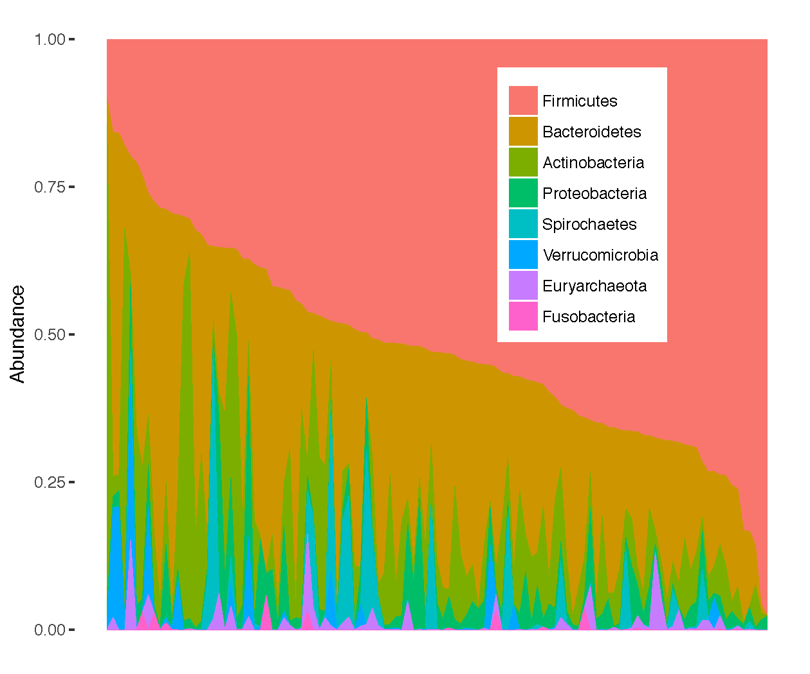

TBRU microbiome data analysis page
What is the Tri-I TBRU?
The NIH/National Institute of Allergy and Infectious Diseases TBRU program funds multi-disiplinary, collaborative, benchside-to-bedside research aimed at understanding the biology of host-pathogen interactions within the context of the clinic.
The Tri-I TBRU is a multi year study conducted in Haiti and New York City aimed at understanding the incrediably complex relationsips between humans and one of the most exquisitely evolved human pathogens, Mycobacterium tuberculosis.
Check out our most recent papers!
Mucosal-associated invariant and γδ T cell subsets respond to initial Mycobacterium tuberculosis infection
JCI Insight, 2018
doi: 10.1172/jci.insight.121899
Antibiotic treatment for Tuberculosis induces a profound dysbiosis of the microbiome that persists long after therapy is completed
Scientific Reports 7, Article number: 10767 (2017)
doi: 10.1038/s41598-017-10346-6
News coverage from Weill Cornell Medicine

This work was generously funded by the following NIH grants:
--Tri-Institutional TB Research Unit: Persistence and Latency: Grant ID U19 AI111143, National Institute of Allergy and Infectious Diseases Extramural Activities
--J NRSA Training Core: Grant ID TL1 TR002386, National Center for Advancing Translational Sciences
--Clinical and Translational Science Center: Grant ID UL1 TR000457, National Center for Advancing Translational Sciences